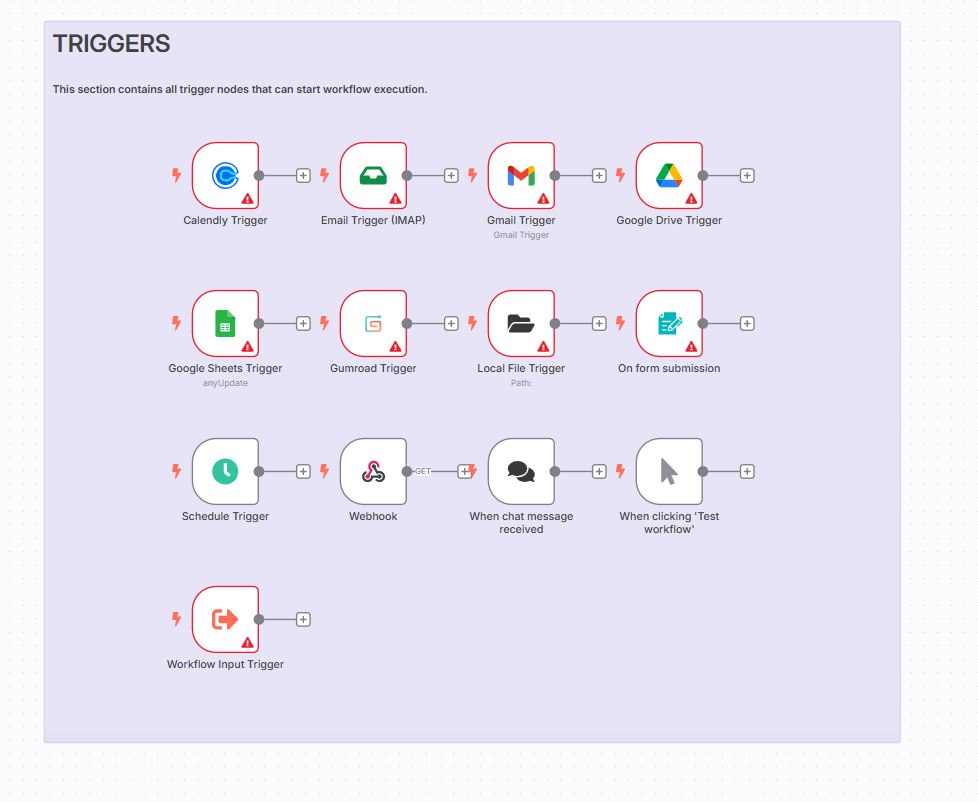

Automaçêo em tempo real baseada em eventos externos
Transforme o n8n de uma ferramenta agendada para uma plataforma que reage instantaneamente a eventos do seu negócio
Event Triggers escutam eventos externos de aplicações como Gmail, Slack, HubSpot, Google Calendar e disparam workflows instantaneamente quando o evento ocorre.
💡 Diferença crucial: Event Triggers transformam n8n de uma ferramenta baseada em horário (Schedule Trigger) para uma plataforma que REAGE EM TEMPO REAL a eventos do seu negócio, sem esperar polling ou verificações agendadas.
Nodes como Gmail Trigger, Slack Trigger, HubSpot Trigger, Google Calendar e outros permitem construir automações sempre ativas que respondem imediatamente a novos emails, mensagens, contatos, eventos e muito mais.

| Node | Evento Típico | Setup/Notas |
|---|---|---|
| Gmail Trigger | New Email Received | Use filtros, polling |
| Slack Trigger | New Message, Reaction, Channel Created | Credenciais app necessárias |
| HubSpot Trigger | New Contact, Form Submission | Setup conexêo app |
| Google Calendar | New Event, Event Update | Selecione calendário, evento |
| Webhook Trigger | Incoming HTTP Request | Totalmente custom/webhook |
🎯 Funçêo
Dispara workflow quando nova mensagem chega no Gmail ou corresponde a filtros customizados
💼 Quando Usar
Ideal para automações que respondem instantaneamente a novos emails: parsing de anexos, respostas automáticas, logging de mensagens em bancos de dados
⚙️ Configuraçêo (Passo a Passo)
1. Autentique n8n com sua conta Google
2. Escolha frequência de polling (verificaçêo)
3. Aplique filtros opcionais: remetente, label, status nêo lido, sintaxe de busca do Gmail
4. Decida payload: simplificado (campos core) ou dados raw completos
5. Pode limitar triggers apenas a certos labels, remetentes ou critérios de busca específicos
🎯 Funçêo
Dispara workflow em eventos do Slack: mensagem postada, reaçêo com emoji, novo canal/usuário criado
💼 Quando Usar
Perfeito para ações instantâneas como roteamento de notificações, logging de mensagens, ou iniciar workflows baseados em atividade de chat
⚙️ Configuraçêo
Autentique com seu workspace Slack usando Slack API e configure eventos específicos
📧 Parse de Anexos em Email
Gmail Trigger detecta emails com anexos, extrai arquivos automaticamente e processa (ex: upload para cloud, análise de dados)
🤖 Respostas Automáticas
Responder automaticamente a emails de clientes com informações específicas ou templates personalizados
📊 Logging de Mensagens
Registrar mensagens do Slack ou emails em banco de dados para auditoria, análise ou compliance
🔔 Roteamento de Notificações
Baseado em eventos (novo contato HubSpot, evento Google Calendar), enviar notificações para equipes específicas
⚡ Workflow Iniciado por Chat
Mensagem específica no Slack dispara workflow complexo (ex: "/report sales" gera relatório automaticamente)
Cenário: Responder automaticamente emails de suporte que contenham "urgent" no assunto
⚡ Poder: Automaçêo sempre ativa, responde em segundos após email chegar!
🔄 Polling vs Webhooks
Alguns triggers (Gmail) usam POLLING (n8n verifica eventos a cada X minutos), outros usam WEBHOOKS para notificações instantâneas. Entenda qual seu trigger usa!
🎯 Use Filtros para Evitar Triggers Desnecessários
Configure filtros no próprio trigger node para disparar apenas em eventos relevantes e manter execuções focadas
🧪 Testando Event Triggers
Ative o workflow e CAUSE o evento (envie email de teste, poste mensagem no Slack) para verificar setup. Execuções manuais sêo para teste, mas apenas modo "active" escuta eventos automaticamente!
🔧 Integrações Nêo Suportadas
Para apps sem event trigger nativo ou eventos customizados, use Webhook Trigger node ou HTTP generic triggers
🔒 Credenciais e Permissões
Sempre configure credenciais corretamente e garanta que app tem permissões necessárias (ex: Gmail API precisa de acesso completo à inbox)
Event Triggers sêo essenciais para construir automações responsivas e "always-on" que reagem instantaneamente a eventos do negócio em todas suas ferramentas e plataformas.